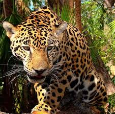
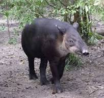
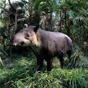

El Jaguar: Emblema de Chiapas
El felino mas grande de America y tercero en el mundo, es una especie que habita zonas de la geografía chiapaneca, resalta la belleza de su piel y la agilidad de sus movimientos. Son animales casi exclusivamente nocturnos y tienen gran habilidad para ver en la oscuridad, son carnívoros por excelencia y cazadores sobresalientes, son solitarios y generalmente se encuentran a los bordes de selvas y ríos. La especie está en peligro de extinción, es decir el número de especies ha disminuido de manera drástica debido a la caza de la que son víctimas estos felinos, por lo que corren el riesgo de desaparecer por completo. Como una solución a este problema hay centros donde se mantienen en cautiverio para su reproducción y hacer que la especie crezca en número y preservar este ejemplar simbólico del estado para que continúe dentro de la biodiversidad de la entidad. Una de las poblaciones de jaguar más importante en México se encuentra en la Selva Lacandona, Chiapas.
El jaguar es capaz de habitar en distintos ecosistemas -incluidos manglares, bosques de pino templado, desiertos e incluso áreas montañosas- pero prefiere las selvas bajas tropicales y los bosques subtropicales ubicados a menos de mil metros de altura. Ahí encuentra una enorme abundancia de animales y plantas, así como agua. Es un animal extremadamente fuerte, de cuerpo robusto con miembros cortos y musculosos, cabeza ancha, orejas pequeñas y redondeadas. Mide entre 1.5 y 2.4 metros, pesa entre 45 y 120 kg y, usualmente, los machos son un 10 a 20% más grande que las hembras. Su corpulencia cambia con respecto al área donde vive, los animales que habitan en Mesoamérica son más pequeños que en Sudamérica. Se distingue por la facilidad con que se desplaza en su entorno. El color de su piel va del amarillo al rojizo en el dorso y costados, blanco en el vientre y la parte interna de las patas, y tiene el cuerpo cubierto por rosetas de tamaño variable, con manchas pequeñas en el centro. El patrón de motas es único para cada individuo, gracias a ello es posible identificarlos. Los jaguares negros o melánicos son comunes en Sudamérica, sin embargo en México no se tienen registros confirmados.

Tapir
Los tapires se parecen a los cerdos con trompa, pero en realidad están relacionados con los caballos y con los rinocerontes. Este linaje ecléctico es antiguo y también lo es el propio tapir. Los científicos creen que estos animales han cambiado poco durante decenas de millones de años. Los tapires tienen nariz y un labio superior prensil, llamado ventosa, extendido sobre un tronco corto. Utilizan esta trompa para agarrarse a las ramas y limpiarlas de hojas o para ayudar a recolectar sabrosos frutos. Los tapires se alimentan cada mañana y cada tarde. Durante sus periodos de alimentación, siguen senderos a través de bosques densos y cerrados, dejando muchas huellas para llegar a abrevaderos y exuberantes zonas de alimentación. Al caminar y defecar, depositan en el suelo las semillas que han consumido, lo que contribuye al futuro crecimiento de las plantas. Aunque parecen ser robustos, los tapires se sienten cómodos en el agua y, a menudo, se sumergen para refrescarse. Son excelentes nadadores e incluso pueden bucear para alimentarse de plantas acuáticas. También se revuelcan en el barro, tal vez para quitarse las molestas garrapatas de sus gruesas pieles.

